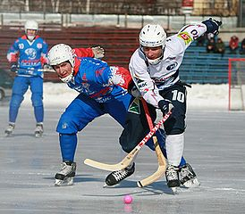

ХОККЕЙ
Первое зарегистрированное использование слова «хоккей» находится в книге 1773 года «Юношеские виды спорта и игры, к которым прилагаются мемуары автора: Включая новый способ воспитания детей» (Juvenile Sports and Pastimes, to Which Are Prefixed, Memoirs of the Author: Including a New Mode of Infant Education) Ричарда Джонсона (псевд. Мастер Мишель Анджело), глава XI которой называлась «Новые улучшения в игре в хоккей» (New Improvements on the Game of Hockey). Британские источники связывают происхождение термина «хоккей» со словом «хауки» или «хоки». Именно так в начале средневековья в ряде английских графств назывались праздники уборки урожая. Во время этих праздников проводилась игра с целью провести мяч изогнутыми палками в зону противника. Любопытно, что и сейчас в южных штатах США рабочие используют хокки — инструмент вроде тяпки, которым возделывают землю.